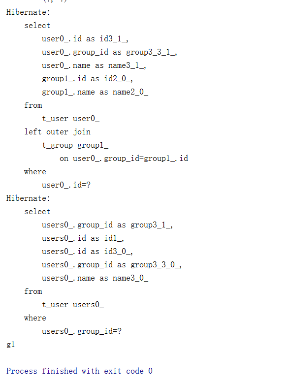

第四十七课.关联关系的CRUD Cascade Fetch 1
User.java：
Group.java：
HibernateORMappingTest.java：
运行：
看一下数据库：

发现我们没有执行s.save(g)这个操作，只是设置了g，然后存储了u，但是hibernate自动帮我们存储g，其实这就是因为我们设置了：@ManyToOne(cascade = {CascadeType.ALL})
也就是级联，由于User和Group之间存在多对一的关系，所以每当我们存储一个User的时候，由于级联，对应的Group也会被自动存储。
CascadeType取值
ALL Cascade all operations所有情况
MERGE Cascade merge operation合并(merge=save+update)
PERSIST Cascade persist operation存储 persist()
REFRESH Cascade refresh operation刷新
REMOVE Cascade remove operation删除
cascade仅仅是帮我们省了编程的麻烦而已，不要把它的作用看的太大
Cascade的属性是数组格式，指明做什么操作的时候关联对象是绑在一起的
第四十八课. 关联关系的CRUD Cascade Fetch 2
上一节我们存储了User，Group会一并存储进数据库，那么现在我们存储Group，User会不会也一并存储呢？
我们来做实验：
在HibernateORMapping.java中加入：
现在两个User都是transient状态，然后我们创建一个Group，将这两个User加入Group，然后save这个Group，看结果：
发现只是将Group插入数据库，但是没有插入User。
究其原因，是因为在ManyToOne这一段是有设置Cascade级联，但是在OneToMany这一段并没有设置。我们重新设置：
（Group.java）：
运行：
发现这一次把两个User也插入到数据库里面去了。
我们看一下数据库：
很糟糕，两个User是被插入了，但是它们的group_id是空值。
这个原因是由于我们在设置User的时候，没有设置它们的group，重新来写：
查看数据库：
没问题了！
- 铁律：双向关系在程序中要设定双向关联
- 铁律：双向mappedBy
刚刚试了插入的级联，我们现在再测试一下，取一个对象的操作，看看能不能级联：
运行：
发现将User和对应的Group都取了出来。
刚刚是在cascade设了级联的情况，现在把ManyToOne这一端的cascade删除了，再测试：
OK，还是可以的。这说明ManyToOne默认情况下会把对应的One那一方取出来。
我们已经试过了多对一这一方的读取，再来试一下一对多的读取。
就是说，如果我们读取一个Group，会将与它关联的User都取出来吗？
测试代码：
运行：
发现只是将id号为1的Group取了出来，并没有取User。
我们不是已经设置了Cascade了吗？
注意：
cascade只是负责CUD，R，也就是读取，和cascade没有关系。
读取与另外一个参数有关系，就是fetch
我们查阅文档知道fetch返回值是一个Enum类型的，有两个选项：Eager和Lazy
OneToMany这一端默认是Lazy，我们设置成Eager试一下：
Group.java：
并且在测试程序中，将获取到的Group对象中包括的User名字都打印出来：
运行：
发现Group中包括的User都被成功取出来了！
第四十九课. 关联关系的CRUD Cascade Fetch 3
刚刚试了OneToMany的fetch，那么ManyToOne的默认应该是Eager了，我们试着将它设置成Lazy，看看什么情况：
|
|
运行试一下：
果然，只取了User。那么什么时候会将Group取出来呢？
我们修改测试程序：
也就是当我们取出User之后，将User的Group取出来打印，运行看结果：
发现可以成功取出！
但是如果我们将打印语句放在commit之后：
发现会报错，原因在于我们是Lazy的fetch，所以Commit之后，就没有Session了，因而取不出User。
但为什么之前的OneToMany那一边就可以？
因为那里已经设置了Eager的fetch，也就是说，不论有没有Session，都已经将User都取出来了，所以不需要再到数据库去取，从而也就不需要session了。
load和get效果一样。
我们再把ManyToOne后面的fetch去掉，也就是回到Eager，再重新测试，结果：

发现从数据库中取了两次User，这就告诉我们，在设计多对一和一对多的时候，不要两端同时Eager，其实默认的JPA的设计就很好，也就是ManyToOne是Eager，OneToMany是Lazy。（这个可以这么理解，如果我们写一个BBS，一个版块中有很多帖子，如果每一次我们每加载一个版块，如果采取Eager，那么就会把所有帖子都拿出来加载，这个肯定是不现实的）。
第五十课. 关联关系的CRUD Cascade Fetch 4
我们把ManyToOne的cascade改成ALL：
测试程序：
运行之后结果：
发现不光给我们的User做了更新，还给Group做了更新。
但是我们如果用了其他的cascade参数，并不会都更新，比如我们设置：
运行后发现，只更新了User，并没有更新Group：
但如果测试程序中update(u)改成merge(u)，就可以。
再比如我们想测试persist的用法：
运行之后发现，是会将创建好的User和与其级联的Group一并插入到数据库的：
第五十一课. 关联关系的CRUD Cascade Fetch 5
我们来测试删除User：
执行后发现User表和Group表都被删除了。原因在于我们在ManyToOne和OneToMany两端都设置了CascadeType.ALL，也就是在删除时候也会执行级联操作，所以连带着，把两张表都删除了。
这显然不是我们想要的，如果我们只想把一个User删除，怎么做？
修改代码：
也就是把这个User的Group设成null，这样就不存在级联关系了，这样再执行，就只会删除这一个User了。
或者我们可以使用HQL或者EJBQL也可以做到：
这次再查看数据库：
没问题，顺利解决。
其实实际工作中，我们使用EJBQL或者HQL比较多。
第五十二课.关联关系的CRUD Cascade Fetch 6
上一次我们删User，会连带着把Group删掉，最后就没有数据了。
这一次我们删Group，看看怎么样？
测试程序：
运行：
看数据库：
也就是说，把所有的表都删除了。
所以还是因为cascade的原因，如果只想删除group，把级联的user的id设置为null，我们还可以用HQL或者EJBQL来控制。
也就是说，如果想消除关联关系，先设定关系为null，再删除对应记录。如果不删记录，该记录变成垃圾数据